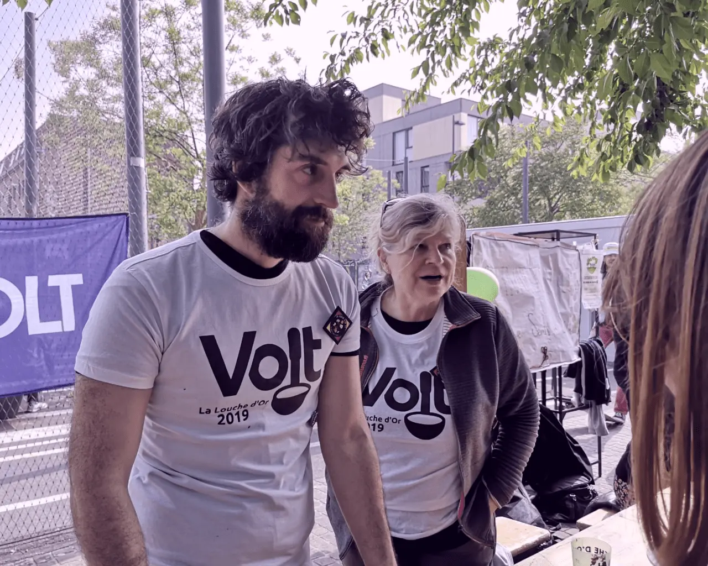
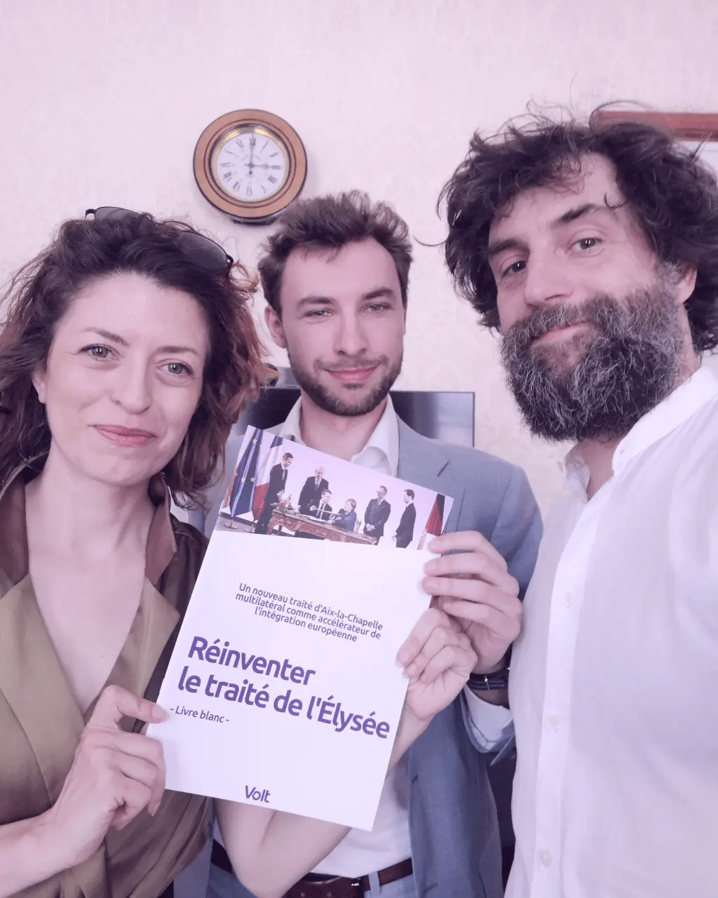

À propos de moi
Qui suis-je ?
TL;DR – Je m'appelle Sven. J'ai 49 ans et je viens de Bavière. En 2012, j'ai déménagé à Lille où je gère des projets d'innovation pour un éditeur de logiciels open source, qui cherche à prouver que tout peut aujourd'hui se faire avec des technologies conçues en Europe. Fin de l'année dernière, j'ai déménagé en Slovénie, le quatrième État membre de l'UE après l'Allemagne, l'Autriche et la France, que j'espère bientôt appeler « home ».

Je suis un « ancien » de Volt, que j'ai rejoint en 2017 lorsque Volt n'était encore qu'un petit groupe naïf - loin des 35 000 membres dans 31 pays que nous sommes aujourd'hui. Outre l'équipe locale de Lille qui j'ai lancé et piloté, j'ai passé quatre ans au Bureau de Volt France, dont deux en tant que coprésident. En 2024, j'étais élu tête de liste en France pour les élections européennes et j'ai également tenté de devenir le « Spitzenkandidat » symbolique de Volt Europa. Aujourd'hui en Slovénie, j'aide à lancer notre section slovène tout en réfléchissant, depuis le fond de la librairie BD où je loue mon workdesk, comment relancer le projet européen.
La suite ?
Volt a été créé pour faire avancer le projet européen vers une Europe fédérale. C'est le « +1 » dans nos « 5+1 » objectifs clés. Mais à la lumière des huit dernières années et des changements dans le monde, je suis de plus en plus convaincu que le +1 doit devenir notre objectif principal et que la réforme des traités est le premier domino qu'il faut faire tomber.
Le Parlement européen n'est pas le bon endroit pour cela. Il se situe au bout de la chaîne législative et n'a aucun levier pour forcer une réforme des traités ou mettre nos objectifs à l'agenda. Nous devons trouver des moyens plus astucieux d'influencer les gouvernements nationaux et de pousser l'Europe là où elle doit aller – devenir un véritable acteur politique et géopolitique à l'échelle mondiale. Si les nationalistes appellent ouvertement au démantèlement de l'Union européenne – encouragés par les hérauts de Trump et de Poutine – les fédéralistes doivent eux aussi appeler clairement à une intégration européenne complète et trouver des soutiens pour pousser l'équilibre dans cette direction.

Que fais-je dans la vie réelle ?
En 2012, j'ai quitté l'Autriche pour la France afin de travailler pour l'un des plus grands éditeurs de logiciels open source d'Europe (nous ne sommes pourtant que 40 développeurs). Je gère nos projets de R&D en France et en Europe, couvrant le cloud, la défense, la télco et l'automatisation industrielle.
Je suis entré dans l'informatique bien avant 2012 grâce à une start-up que j'ai créée qui cherchait à automatiser les petites commandes dans le commerce d'articles de sport (internet au lieu du téléphone et du fax). Monter mon propre entreprise m'a appris à programmer et de nombreuses leçons précieuses. Mais ma start-up a grandi comme un bonsaï plutôt qu'à pas de géant, et j'ai fini par décider de tourner la page – ce qui m'a conduit en France.
L'idée de créer ma propre entreprise m'est venue après avoir travaillé dans l'entreprise textile de mes parents. J'ai fait ma part de ventes et de marketing, appris les difficultés du financement et de la gestion d'une entreprise en difficulté – y compris les faillites et les tentatives d'achat hostiles. J'ai compris à un moment donné que je devais trouver mes propres chaussures pour être heureux dans la vie – et que ce n'étaient ni celles-ci, ni ce chemin que je voulais suivre.
Avant de marcher quelques kilomètres « avec de mauvaises chaussures », j'ai étudié l'administration des affaires avec une spécialisation en marketing, finance et gestion de l'innovation en Allemagne et aux États-Unis – mon deuxième séjour dans l'Amérique « flyover », après une année de « high school » à 17 ans.
Que fais-je chez Volt ?
C'est après le premier tour des présidentielles de 2017 et le duel Macron-Le Pen que j'ai réalisé que la démocratie est fragile. En tant qu'Allemand, je n'avais pas le droit de voter ni aux présidentielles ni aux législatives en France, mais je voulais quand même contribuer d'une manière ou d'une autre. J'ai découvert Volt en cherchant un mouvement politique qui ne sonne pas trop « politique » et je me suis inscrit par curiosité. Une première réunion européenne à Paris m'a confirmé que tout le monde était sans doute trop naïf vu l'ampleur de la tâche, mais aussi très motivé pour changer la politique et l'Europe. C'est ainsi qu'a commencé mon aventure violette.

Malheureusement, Volt en France n'est pas allé très loin, échouant déjà à ouvrir un compte bancaire – la vie d'un nouveau parti en France est difficile. Ce fut une grande déception pour moi de ne pas pouvoir participer aux élections européennes. Mais les bonnes choses prennent du temps et l'avantage avec Volt Europa, c'est que nous avons 27 tentatives de réussir. Il suffit qu'une seule fonctionne pour donner vie et sens à tous les autres chapitres. Et avec notre premier député élu en Allemagne, nous avions notre raison d'être pour continuer à nous battre pour nos objectifs dans toute l'Union européenne. Cinq ans plus tard, nous avons déjà 5 députés au Parlement européen.
Ma première vraie expérience de campagne a eu lieu lors des municipales de Lille en 2020, où j'étais candidat et ai organisé notre participation dans une coalition avec EELV. Ce fut une expérience formidable de faire campagne avec des partis établis, d'apprendre des choses comme le porte-à-porte et de voir l'effort réel nécessaire pour être élu. Nous avons perdu avec justesse et d'environ 200 voix. J'ai cessé d'être déçu en réalisant que la politique n'est pas facile et ai commencé à partager mon expérience avec d'autres équipes en France.
Pour avoir une chance aux européennes de 2024, j'ai d'abord siégé deux ans au Bureau français avant d'être élu coprésident en 2021. Nos objectifs étaient de nous présenter aux législatives pour nous qualifier pour le financement public et professionnaliser notre mouvement en embauchant du personnel rémunéré, ainsi que de bâtir une coalition avec une chance d'élire au moins un député Volt en France en 2024. Ces objectifs, je les ai atteints avec le Bureau et même si les européennes ne se sont pas passées comme prévu – une coalition même dotée des 1,5 M€ nécessaires pour financer les bulletins et professions n'est pas une garantie de succès – j'ai appris mes leçons et je tenterai autre chose en 2029. Comme me présenter dans un autre État membre.
Ai-je aussi une vie privée ?
Actuellement, la vie reste un peu mouvementée sur le plan administratif depuis notre déménagement en Slovénie. Je reste membre d'associations françaises qui militent pour une Europe fédérale et je développerai certainement mon réseau à Ljubljana et au-delà une fois que je parlerai un slovène de base – ce qui s'avère déjà être un défi intéressant. Famous last words... : j'ai été hôte Couchsurfing et organisateur Meetup pendant de nombreuses années, je dansais bien le tango et je suis toujours à la recherche d'architecture brutaliste. Assez logiquement, j'ai organisé un blind date dans une centrale nucléaire et j'ai proposé ma femme dans la tour de refroidissement de l'ancienne centrale de Charleroi.